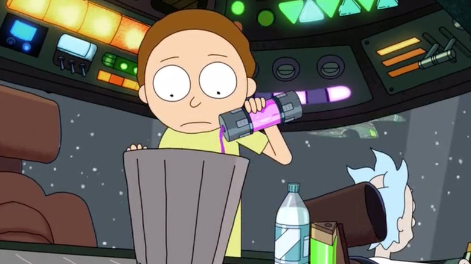

Concentrated dark Matter

Description
The special fuel to travel through space faster than anybody else!
Ingredients:
- Cesium
- Plutonic Quarks
- Bottled water
- A bucket
How to make Concentrated Dark Matter
- Two parts Plutonic Quarks into the bucket.
- One part Cesium into the bucket.
- Empty the water bottle into the bucket.
- Pour it all into the fuel tank, so you can go wherever you want.